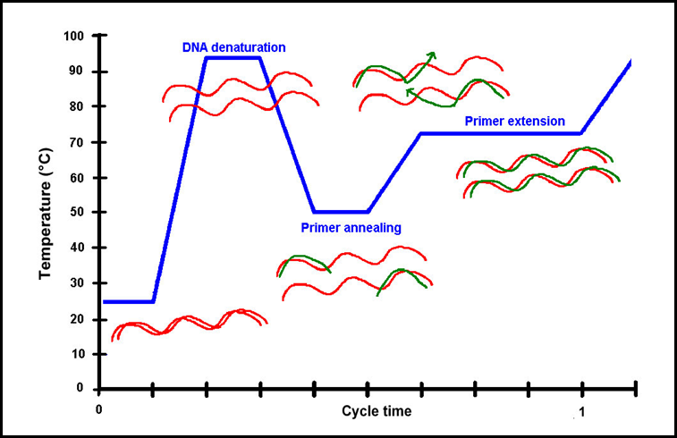

One of the central methods in genetic testing is the polymerase chain reaction, commonly known as PCR. This technique is used to make copies of DNA fragments for a wide variety of uses, such as genetic analysis or editing. Along with CRISPR, PCR has cemented itself as one of the most well-known and vital laboratory procedures for both clinical and research contexts. The specific applications of PCR are too numerous to list, including the diagnosis of both infectious and genetic diseases, as well as forensic analysis and paternity testing. But first, a primer (you'll get this pun later) on DNA.
DNA
The core idea of genetics is that certain traits, like eye colour, can be passed on from an organism to its offspring. The basic unit of information that needs to be transferred for this inheritance to take place is called a gene. Genetic information is encoded in biological molecules called nucleic acids, which include deoxyribonucleic acid (DNA). A nucleic acid is a chain of nucleotides, each consisting of a nucleobase, a sugar, and a phosphate group. For DNA, this sugar is deoxyribose, and the four possible nucleobases are cytosine, guanine, adenine, and thymine, while the phosphate group is composed of one to three phosphates. A DNA fragment can be identified by its sequence of nucleobases, as these components are what actually carry the genetic information.

DNA normally has the structure of a double helix, meaning it has two strands which coil around each other. Each of these strands has a "complementary" sequence of nucleobases to the other: adenine pairs with thymine, and cytosine pairs with guanine. Contrarily, RNA (another nucleic acid) is typically single-stranded, making it less stable and more prone to mutations.
Replication is the process of creating exact copies of a DNA sequence. This naturally occurs when a cell divides, as every cell in an organism needs to contain a copy of the entire genome. At a high level, replication involves separating the two strands of DNA and then building a complementary strand on each of them sequentially. In some more detail, the double helix is split by a helicase, a type of
enzyme. Short sequences of single-stranded DNA called primers act as the starting point for the other helix. A
DNA polymerase then creates a double helix somewhat like a zipper by elongating the primer on the template.
PCR
Kary Mullis is credited with the invention of PCR in 1983, though he himself credited LSD, which he enjoyed recreationally and often synthesized as a graduate student. The idea behind PCR is to artificially replicate a specific portion of a DNA sequence outside of a cell. In cell division, the double helix of DNA is separated with a
helicase, but in PCR, the strands are separated by increasing the temperature (this is called "melting" or "nucleic acid denaturation"). Two primers marking the beginning and end of the sequence of interest then bind to the template strands (one binds to each separated strand). A DNA polymerase elongates each primer using supplied nucleotides, creating a sequence that starts at the sequence of interest but continues past it. Then, the same process repeats except with the truncated sequences acting as the template, producing copies of the target sequence. The entire process can then be repeated to exponentially grow the number of copies.

Each stage in the PCR cycle takes place at a specific temperature, as the enzymes involved function at specific temperatures, and denaturation must take place without destroying the reagents. There are also extra steps that occur before the first cycle and after the final cycle at prescribed temperatures.
In parallel, a botanist named Thomas Brock specializing in mushrooms (specifically the morel) taught himself molecular biology and then returned to academia. Researching bacteriology this time, he discovered a thermophilic microorganism in Yellowstone National Park that could not just tolerate, but in fact thrived at high temperatures. It would be named Thermus aquaticus, and later on, a master's student named Alice Chien isolated a new kind of DNA polymerase (referred to as Taq) from it that could work at high temperatures. The discovery of Taq polymerase made PCR viable in practice, as the denaturation step in PCR destroyed conventional DNA polymerases, meaning they would have to be re-added after every cycle.
Significance
It is difficult to overstate the significance of PCR, though it is also difficult to explain it. Most common methods of analyzing DNA will involve PCR, but because it does not reveal anything on its own, there is some difficulty in demonstrating its role. Rather than being an investigation on its own, it is a necessary step in probing DNA that has to be paired with some way to analyze the resulting fragments. For example, electrophoresis is often employed to separate these fragments and determine their charge or size. In some applications, this is all the information that is needed, but even further analysis can be performed using techniques such as Southern blotting to identify specific sequences. Regardless of what subsequent procedures are performed, most of them would likely not be practical without PCR, especially in situations where there is a limited source of DNA samples, such as for extinct species with surviving traces of genetic material. But armed with this information, you can now learn about these later steps without wondering where we get our DNA fragments from, hopefully while appreciating the giant lurking in the shadows that PCR truly is.

{kind=link}